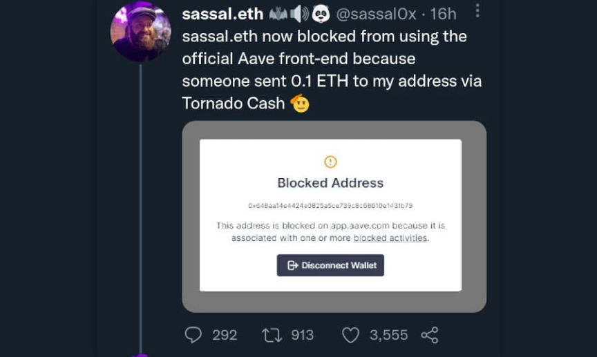
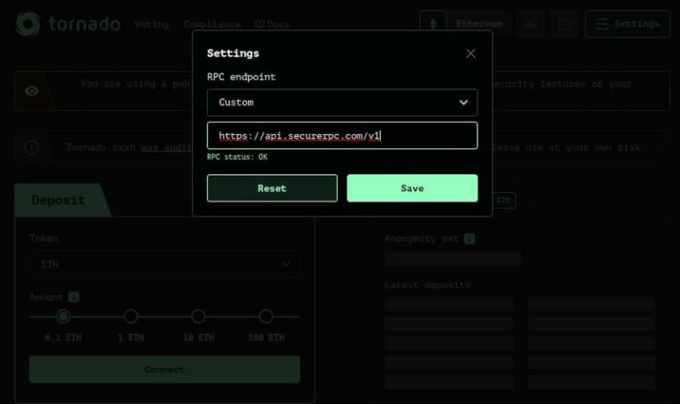
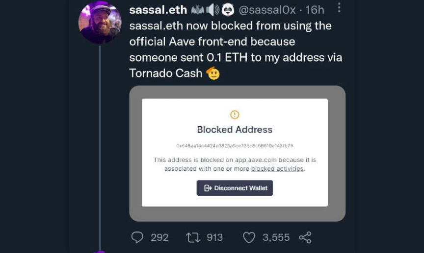
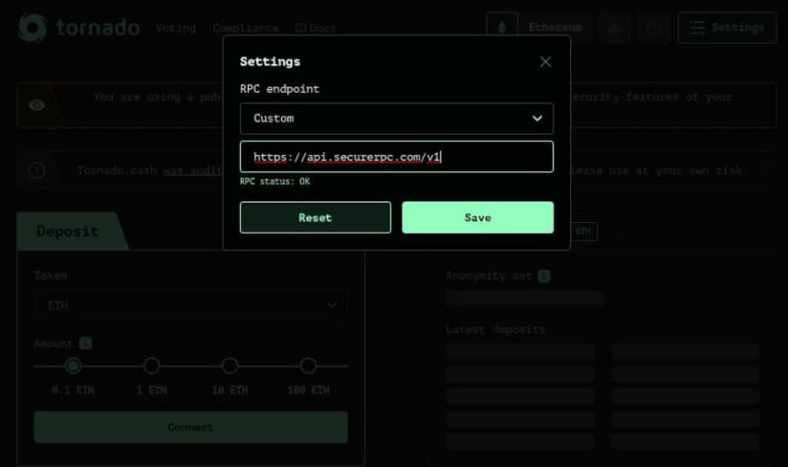

Treasury Department Releases Tornado Cash FAQs
~4 min read | Published on 2022-09-14, tagged Sanctioned, Tornado-Cash using 843 words.
The United States Department of the Treasury released purported “answers” to frequently asked questions about the Tornado Cash sanctions.
On September 13, 2022, the U.S. Department of the Treasury’s Office of Foreign Assets Control (OFAC) released a “frequently asked questions” page about the Tornado Cash sanctions. The F.A.Q.s deal with applying for a license with the Treasury for completing a Tornado Cash transaction and the “dusting” attacks that occurred after OFAC sanctioned Tornado Cash.

The questions and answers are included below.I sent virtual currency to Tornado Cash but did not complete the mixing transaction or otherwise withdraw my virtual currency before Tornado Cash’s August 8, 2022 designation. How can I complete the transaction or withdraw my virtual currency without violating U.S. sanctions regulations?
For transactions involving Tornado Cash that were initiated prior to its designation on August 8, 2022 but not completed by the date of designation, U.S. persons or persons conducting transactions within U.S. jurisdiction may request a specific license from OFAC to engage in transactions involving the subject virtual currency. U.S. persons should be prepared to provide, at a minimum, all relevant information regarding these transactions with Tornado Cash, including the wallet addresses for the remitter and beneficiary, transaction hashes, the date and time of the transaction(s), as well as the amount(s) of virtual currency. OFAC would have a favorable licensing policy towards such applications, provided that the transaction did not involve other sanctionable conduct.
In order to apply for a specific license to complete a transaction or withdraw virtual currency involving Tornado Cash that was deposited prior to its designation, or to engage in other transactions or dealings with Tornado Cash, you are encouraged to file a licensing request by visiting the following link: https://home.treasury.gov/policy-issues/financial-sanctions/ofac-license-application-page.Do OFAC reporting obligations apply to “dusting” transactions?
OFAC is aware of reports following the designation of Tornado Cash that certain U.S. persons may have received unsolicited and nominal amounts of virtual currency or other virtual assets from Tornado Cash, a practice commonly referred to as “dusting.” Technically, OFAC’s regulations would apply to these transactions. To the extent, however, these “dusting” transactions have no other sanctions nexus besides Tornado Cash, OFAC will not prioritize enforcement against the delayed receipt of initial blocking reports and subsequent annual reports of blocked property from such U.S. persons.
For guidance related to filing an initial and annual report of blocked property, please see F.A.Q.s 49, 50, and 646, respectively, and 31 C.F.R. § 501.603. Please note that the annual filing requirement for 2022 applies only to persons holding blocked property as of June 30 of this year.Can U.S. persons engage in transactions involving identified Tornado Cash virtual currency wallet addresses absent a specific license from OFAC?
No. U.S. persons are prohibited from engaging in transactions involving Tornado Cash, including through the virtual currency wallet addresses that OFAC has identified. If U.S. persons were to initiate or otherwise engage in a transaction with Tornado Cash, including or through one of its wallet addresses, such a transaction would violate U.S. sanctions prohibitions, unless exempt or authorized by OFAC.What is prohibited as a result of OFAC’s designation of Tornado Cash?
On August 8, 2022, OFAC designated the entity Tornado Cash for facilitating the laundering of proceeds of cybercrimes, including those committed by the Lazarus Group, a North Korea state-sponsored hacking group that was sanctioned in 2019. As described in FAQs 561 and 562, OFAC may include as identifiers on the Specially Designated Nationals and Blocked Persons List (S.D.N. List) specific virtual currency wallet addresses associated with blocked persons. As part of the S.D.N. List entry for Tornado Cash, OFAC included as identifiers certain virtual currency wallet addresses associated with Tornado Cash, as well as the URL address for Tornado Cash’s website. The Tornado Cash website has since been deleted from the Internet, but it currently remains available through certain Internet archives.
While engaging in any transaction with Tornado Cash or its blocked property or interests in property is prohibited for U.S. persons, interacting with open-source code itself, in a way that does not involve a prohibited transaction with Tornado Cash, is not prohibited. For example, U.S. persons would not be prohibited by U.S. sanctions regulations from copying the open-source code and making it available online for others to view, as well as discussing, teaching about, or including open-source code in written publications, such as textbooks, absent additional facts. Similarly, U.S. persons would not be prohibited by U.S. sanctions regulations from visiting the Internet archives for the Tornado Cash historical website, nor would they be prohibited from visiting the Tornado Cash website if it again becomes active on the Internet.
For people interested in continuing to use Tornado Cash, @0xfirebird created Torn.la, which provides visitors with the “ipfs & alternative U.I. links for Tornado Cash U.I.” Using Tornado Cash in a post-sanction world is not particularly difficult, according to users. Use at your own risk or use XMR, etc etc.

Frequently Asked Questions | home.treasury.gov, archive.is, archive.org
(Do not apply for a license with OFAC)
On September 13, 2022, the U.S. Department of the Treasury’s Office of Foreign Assets Control (OFAC) released a “frequently asked questions” page about the Tornado Cash sanctions. The F.A.Q.s deal with applying for a license with the Treasury for completing a Tornado Cash transaction and the “dusting” attacks that occurred after OFAC sanctioned Tornado Cash.

A hilarious prank (a cool and legal thrill)
The questions and answers are included below.I sent virtual currency to Tornado Cash but did not complete the mixing transaction or otherwise withdraw my virtual currency before Tornado Cash’s August 8, 2022 designation. How can I complete the transaction or withdraw my virtual currency without violating U.S. sanctions regulations?
For transactions involving Tornado Cash that were initiated prior to its designation on August 8, 2022 but not completed by the date of designation, U.S. persons or persons conducting transactions within U.S. jurisdiction may request a specific license from OFAC to engage in transactions involving the subject virtual currency. U.S. persons should be prepared to provide, at a minimum, all relevant information regarding these transactions with Tornado Cash, including the wallet addresses for the remitter and beneficiary, transaction hashes, the date and time of the transaction(s), as well as the amount(s) of virtual currency. OFAC would have a favorable licensing policy towards such applications, provided that the transaction did not involve other sanctionable conduct.
In order to apply for a specific license to complete a transaction or withdraw virtual currency involving Tornado Cash that was deposited prior to its designation, or to engage in other transactions or dealings with Tornado Cash, you are encouraged to file a licensing request by visiting the following link: https://home.treasury.gov/policy-issues/financial-sanctions/ofac-license-application-page.Do OFAC reporting obligations apply to “dusting” transactions?
OFAC is aware of reports following the designation of Tornado Cash that certain U.S. persons may have received unsolicited and nominal amounts of virtual currency or other virtual assets from Tornado Cash, a practice commonly referred to as “dusting.” Technically, OFAC’s regulations would apply to these transactions. To the extent, however, these “dusting” transactions have no other sanctions nexus besides Tornado Cash, OFAC will not prioritize enforcement against the delayed receipt of initial blocking reports and subsequent annual reports of blocked property from such U.S. persons.
For guidance related to filing an initial and annual report of blocked property, please see F.A.Q.s 49, 50, and 646, respectively, and 31 C.F.R. § 501.603. Please note that the annual filing requirement for 2022 applies only to persons holding blocked property as of June 30 of this year.Can U.S. persons engage in transactions involving identified Tornado Cash virtual currency wallet addresses absent a specific license from OFAC?
No. U.S. persons are prohibited from engaging in transactions involving Tornado Cash, including through the virtual currency wallet addresses that OFAC has identified. If U.S. persons were to initiate or otherwise engage in a transaction with Tornado Cash, including or through one of its wallet addresses, such a transaction would violate U.S. sanctions prohibitions, unless exempt or authorized by OFAC.What is prohibited as a result of OFAC’s designation of Tornado Cash?
On August 8, 2022, OFAC designated the entity Tornado Cash for facilitating the laundering of proceeds of cybercrimes, including those committed by the Lazarus Group, a North Korea state-sponsored hacking group that was sanctioned in 2019. As described in FAQs 561 and 562, OFAC may include as identifiers on the Specially Designated Nationals and Blocked Persons List (S.D.N. List) specific virtual currency wallet addresses associated with blocked persons. As part of the S.D.N. List entry for Tornado Cash, OFAC included as identifiers certain virtual currency wallet addresses associated with Tornado Cash, as well as the URL address for Tornado Cash’s website. The Tornado Cash website has since been deleted from the Internet, but it currently remains available through certain Internet archives.
While engaging in any transaction with Tornado Cash or its blocked property or interests in property is prohibited for U.S. persons, interacting with open-source code itself, in a way that does not involve a prohibited transaction with Tornado Cash, is not prohibited. For example, U.S. persons would not be prohibited by U.S. sanctions regulations from copying the open-source code and making it available online for others to view, as well as discussing, teaching about, or including open-source code in written publications, such as textbooks, absent additional facts. Similarly, U.S. persons would not be prohibited by U.S. sanctions regulations from visiting the Internet archives for the Tornado Cash historical website, nor would they be prohibited from visiting the Tornado Cash website if it again becomes active on the Internet.
For people interested in continuing to use Tornado Cash, @0xfirebird created Torn.la, which provides visitors with the “ipfs & alternative U.I. links for Tornado Cash U.I.” Using Tornado Cash in a post-sanction world is not particularly difficult, according to users. Use at your own risk or use XMR, etc etc.

Torn.la contains all the information necessary to continue using Tornado Cash
Frequently Asked Questions | home.treasury.gov, archive.is, archive.org
(Do not apply for a license with OFAC)